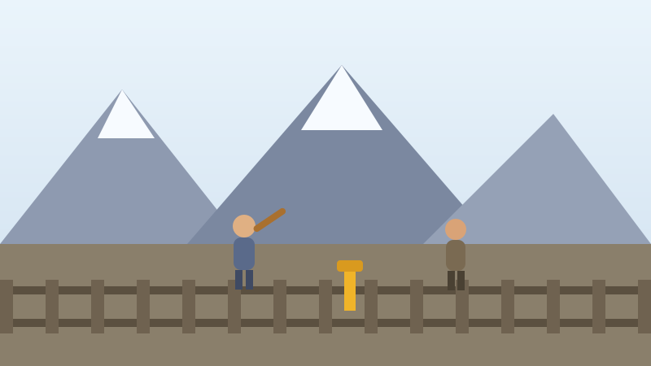

🚂 Pour les enfants
Le chemin de fer qui devait traverser les montagnes
Pour tenir le pays ensemble, le Canada a promis de construire un chemin de fer jusqu'à l'océan Pacifique. Ensuite, il a bien fallu que quelqu'un le fasse.

En 1871, la Colombie-Britannique a accepté de se joindre au Canada, mais seulement si le Canada y construisait un chemin de fer. Il fallait donc poser des rails à travers les prairies, les forêts, les marécages, puis les montagnes Rocheuses.
Les montagnes étaient la partie la plus difficile. Les travailleurs devaient creuser des tunnels à la dynamite dans le roc et bâtir des ponts au-dessus de canyons profonds, avec des outils à main.
Plus de 17 000 hommes sont venus de Chine pour faire ce travail. On leur a confié les tâches les plus dangereuses et on les payait environ la moitié de ce que recevaient les autres travailleurs.
Beaucoup sont morts dans des explosions, des éboulements et des accidents, ou de maladie et de froid. Personne n'a tenu un compte convenable. Les historiens estiment qu'au moins 600 sont morts, et peut-être beaucoup plus.
Le dernier crampon a été enfoncé le 7 novembre 1885, à un endroit de la Colombie-Britannique appelé Craigellachie. Les trains pouvaient désormais traverser le Canada.
Une fois le chemin de fer terminé, le Canada a adopté une loi faisant payer les personnes chinoises simplement pour entrer au pays. Le montant a commencé à cinquante dollars et est monté à cinq cents, plus que ce que la plupart des gens pouvaient économiser en un an. Cette loi a séparé des familles pendant des décennies.
Le 22 juin 2006, le premier ministre s'est levé au Parlement pour présenter des excuses. Des excuses n'effacent rien, mais un pays qui dit la vérité sur son passé est un pays plus fort.
Essaie maintenant trois questions
Pas de chronomètre et aucune note à craindre. Chaque réponse t'explique pourquoi.
← Toutes les histoires pour enfants
À propos de ce quiz
Cette histoire raconte comment le chemin de fer a été bâti d'un bout à l'autre du Canada, qui a fait la partie la plus dangereuse du travail, et les excuses présentées par le Canada en 2006.
Elle est écrite en phrases courtes pour les enfants de six à neuf ans, avec une image dessinée pour ce site et trois questions à la fin. Touchez le bouton de lecture à voix haute et la page lira les questions à haute voix.